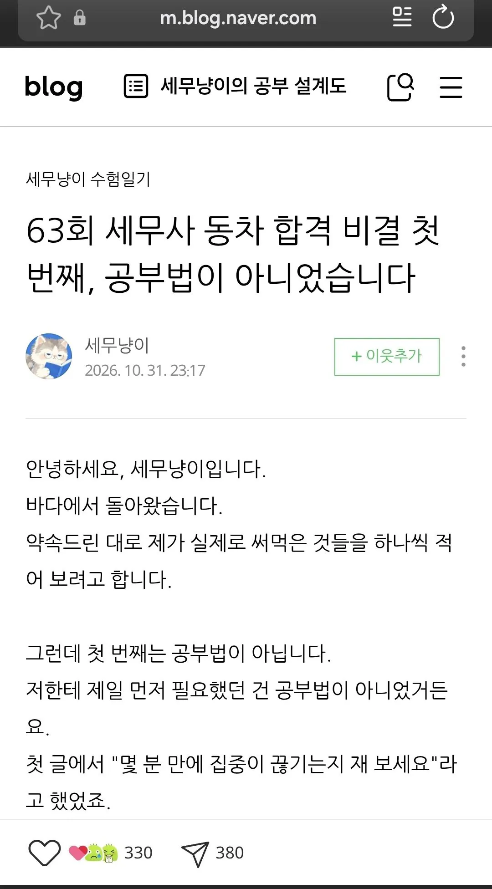

댓글 500개 넘어갔었는데 블로그 댓글 막아버림 ㅋㅋ

댓글 500개 넘어갔었는데 블로그 댓글 막아버림 ㅋㅋ
설령 샀다고 해도, 그걸 시험때 쓴건지는 알수 없는거지
그냥 궁금해서 사봤어요 이럼 끝이고
로그기록?을 뭔수로 조사를 해
수사들어가면 그것부터보겠지
디시에서 애들이 질문하면
문제를 가져오라고 말하던데
걍 실시간 질의응답 받기만 하면 금방 뽀록날 실력 같긴 함
1차 때 댓글에 누가 풀이 질문했는데 엉뚱한 소리하긴 하더라
문제풀이 해보라고 하면 되는거 아닌가
이제와서 시시비비를 가릴수 없지.. 유죄추정하는거잖아
실제 합격할 실력이 아닌 거라고 밝혀져도 합격 취소될 일은 없지않나. 이미 끝난 거지 뭐
질투지.. ai 가 계산기도아니고 세무회계문제를 어케다맞추냐! 클로드최신모델로 시간토큰 존나쓰면 될려나
지금 뭐 어떻게할수있는건없지뭐
서울시교육청, '오답도 똑같이' 숙명여고 쌍둥이 자매 감사 결과 30일 발표
https://www.metroseoul.co.kr/article/2018082600064
숙명여고 사건도 당시에는 걸린거 없었음. 감사와 수사 들어가서 나온거지.
조사해서 취소 등 당연히 가능하고, 그냥 지금이라도 똑같은 문제 또 풀어보는걸로 검증 간단히 가능 그날만 미쳐서 뇌가 200%가동된거 아닌이상
그걸 저 사람이 "내가 왜요? 싫은데요?" 하면 강제할 방법이나 법적 근거가 없지않아?
당연히 될거같은데 왜 안된다고 생각하는거지
판사가 해주는 거지 모든 경우를 법에 적어 놓을 수는 없잖아
부정한 방법으로 시험에 응시하는자 라는 항목이 있지않나??
왈가왈부 할게 있나
어차피 시험은 끝났고 정식 절차에 의한 취득을 물릴수도 없고
재시험? 한명 조지자고 불특정 절대다수의 피해자를 만들겠다는 소린가?
그냥 안전수칙마냥 피로 쓰여진 규정 하나를 늘리는거 말고는 방법이 없음
아작모른다
대여도 돈내고 했을테니 결제기록이 남잖